Biography
Hi, I'm Carlos Senabre Martínez, a 23 year old student who is finishing his university degree.
I was born in Yecla, a small town in the autonomous region of Murcia. When I was about 5 years old I moved to Toledo and since then I live there.
I studied primary, secondary and baccalaureate education at the Nuestra Señora de los Infantes Educational center.
At the end of the EVAU, I opted for the university degree that I am still studying, Industrial and Automatic Electronics, and that I will finish the following academic year with total certainty.
Hobbies
- Football
- Futsal
- Bowling
- Chess
- Indiana Jones
- Transformers
- Torrente
- Alien
- Saw
- Predator
- Tarantino's filmography
- Arrested Development
- Family Guy
- Fargo
- South Park
- Shogun
- Enter The Gungeon
- Crypt of the Necrodancer
- The Binding of Isaac
- OSU!
- A Dance of Fire and Ice
- Celeste
- Duck Game
- Monster Hunter
- War Thunder
- Mordhau
SPORTS
This Erasmus year we got together with some students, usually Spanish and Turkish, to play on the courts of Toyota Park. We rented the courts and competed against each other. Sometimes we played only between Spaniards and that led to the creation of two teams. The following video is a pre-match greeting between two Spanish teams. I am from the white team.
This sport is the one I have played the longest.
When I started playing several years ago, I played as a defender. However, I didn't really like it and to make matters worse the goalkeeper in my team was very bad. I decided to start playing in goal and as I got older, I developed my skills, to the point where at the age of 15-16 I was promoted from time to time with the senior team. Later, in the youth leagues my team was promoted to the División de Honor, a league in which the best teams from all over Spain participated. Sadly, due to the Coronavirus pandemic, all football leagues were cancelled and since then I have not played futsal again.
Once every 3 weeks we get together as a group of friends to compete against each other. We usually don't have any skills, which makes the games more exciting. Who will be the one to win this time? It could be anyone, literally.
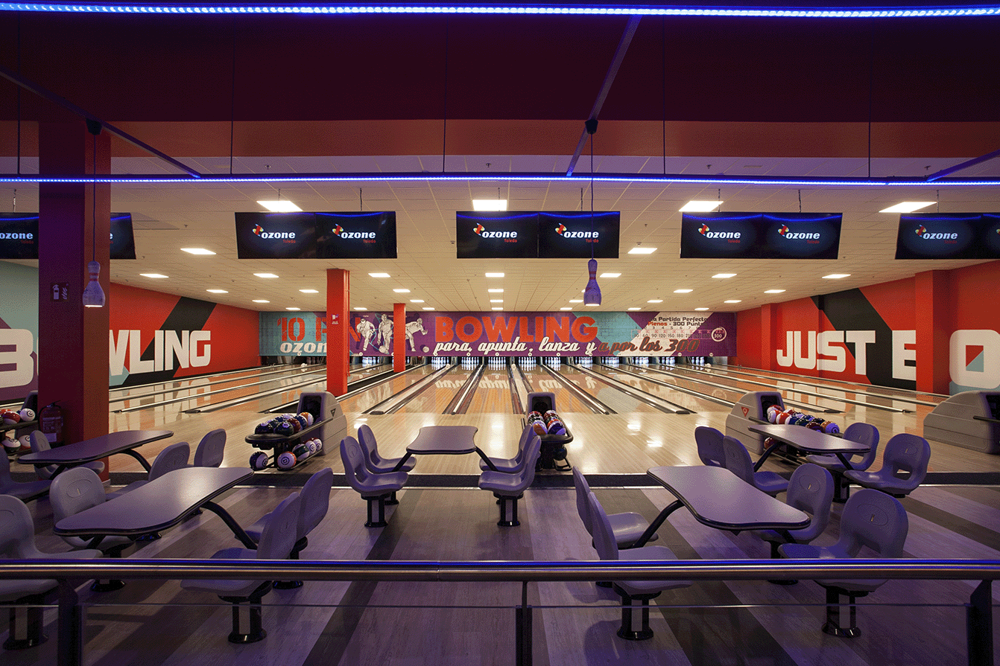Unfortunately, as we put all our concentration on trying not to come last in the ranking I have no pictures of us playing, but I can show the place where we usually play...
Since I was very young I played with my father. He always lost again and again, until I started to learn about openings, tactics, endgames and other chess concepts through the internet, i.e. forums and youtube channels. Now I'm the one who beats him and since then he doesn't want to play so much.
Currently, I play through the website Chess.com because it is one of the most enjoyable for me to play. However,Lichess is very interesting for "training" because of its large number of forums and information shared by all its users.
FILMS AND TV SERIES
FILMS
All the films, at least up to the third one, I think are very cool. The Crystal Skull is not bad, but we also came from the Last Crusade. I have yet to see the fifth film. Highly recommended for everyone.
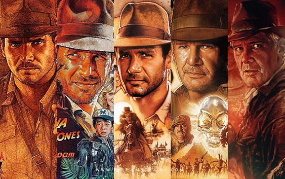Let's not kid ourselves, nobody knows what the plot of any of his films is. However, it's really cool to see giant robots fighting each other without worrying about the plot. Absolutely recommended.
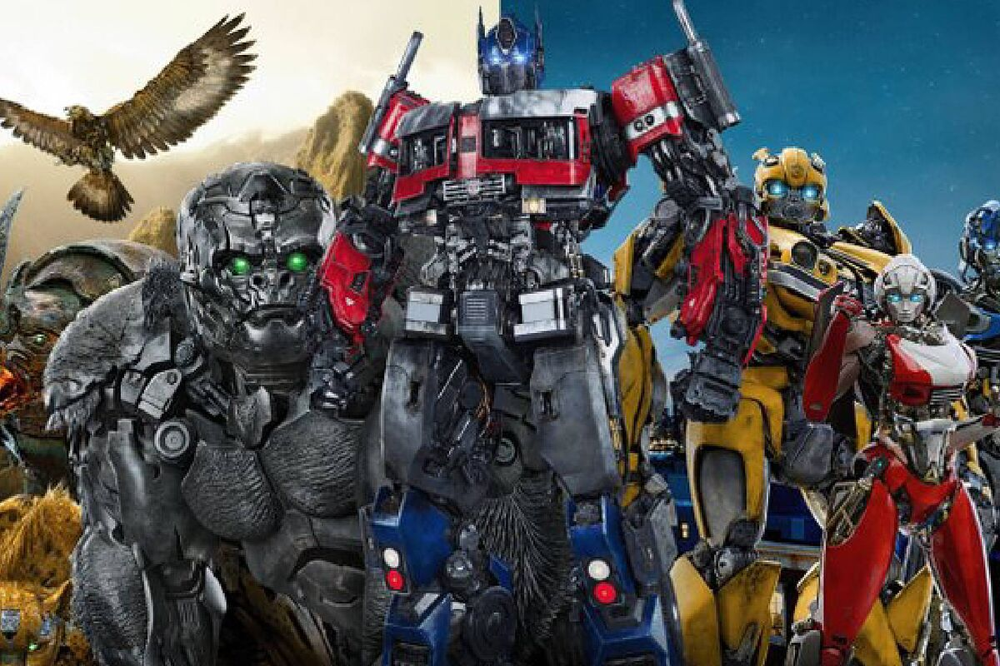The only Spanish saga on the list. You have to have a good stomach to watch these 5 films. I have no idea if there is any version translated into any language other than Spanish. It IS a Spanish satire about a very particular stereotype of a person in Spain, of course exaggerated to the nth degree. Not for all audiences, and even less so as a foreigner, as I think most of the jokes would be lost in translation. Even so, I can assure you that it is quite an experience.
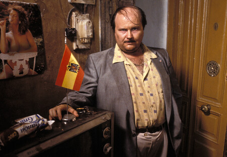Very good saga in general. Highly recommended for anyone. I still remember the play station 1 game with fear.
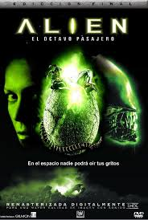I quite liked the saga. I saw the last film not long ago. Recommended for anyone looking for a gore experience.
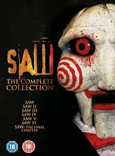A classic action movie. The third film was the one I liked the most.
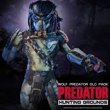One day I felt like watching all of his films and so far I've already seen: Reservoir Dogs, Pulp Fiction, Jackie Brown and Kill Bill 1 and 2. My favourites at the moment are between Pulp Fiction and Kill Bill 1.
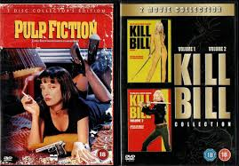SERIES
Apart from films I watch some series. During this Erasmus I have watched the following series:
I never heard of it before I saw it. Definitely recommended, very very funny
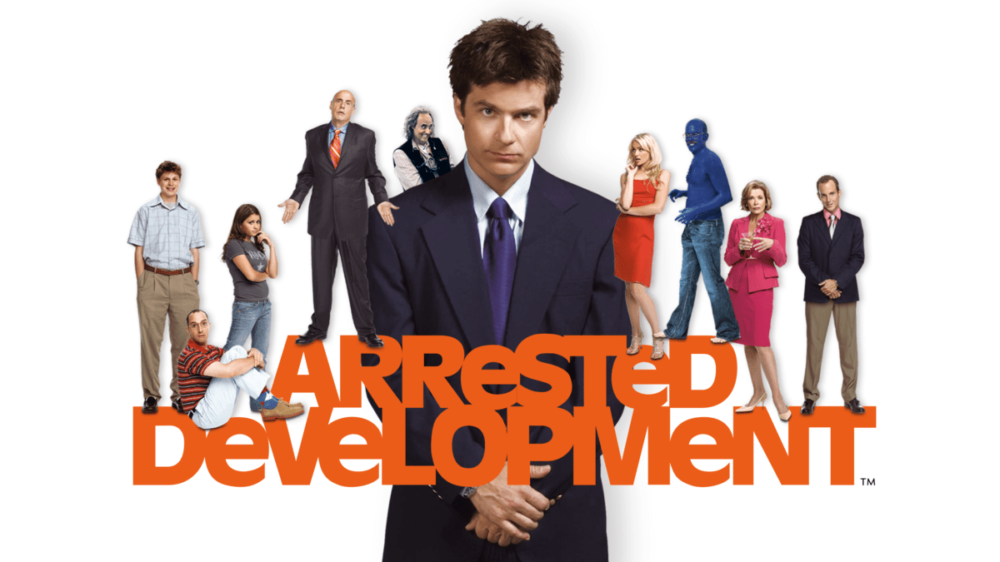It is often said that it ends up being repetitive and becomes simple. I agree, but I watched it back to back in 2 months and still found it funny. I hate Brayan

I didn't find out Fargo was a US city until season 3. It was good overall although there were quite a few things I didn't quite like
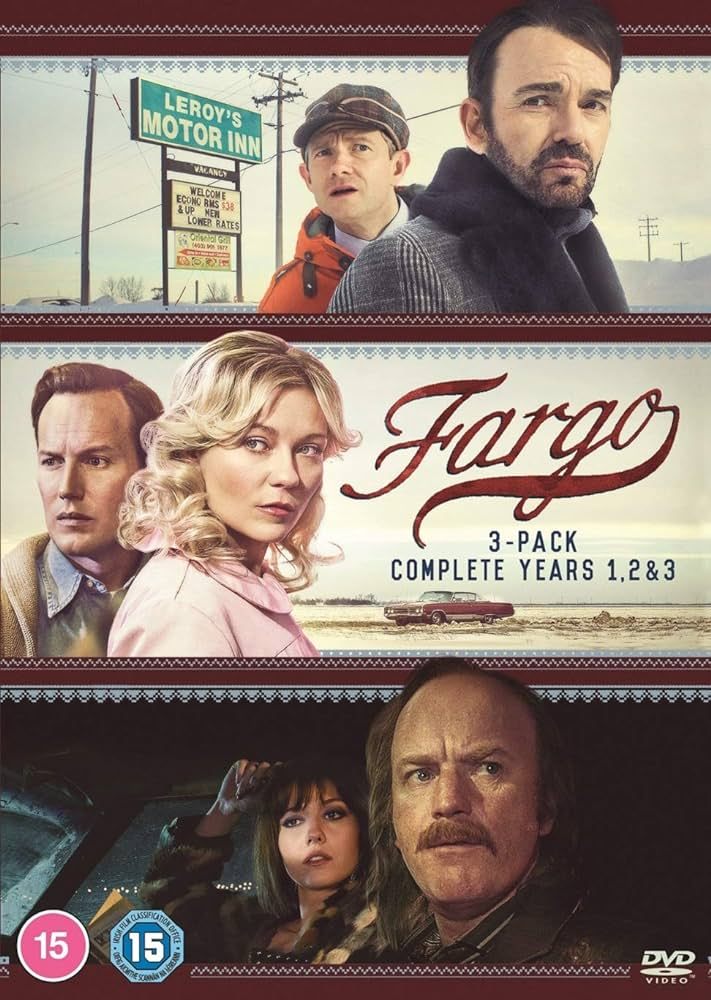Very funny, the best animation for my taste.
Very interesting, I have 3 chapters and I'm hooked.
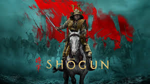VIDEOGAMES
One of my hobbies that I enjoy the most is video games. My favorite genres are the following:
Roguelike
Imagine you are playing a video game where every time you enter, the world changes and is never the same.That's basically a roguelike.In these games, the map, enemies, objects and everything else are randomly generated every time you play, so there's always something new to discover.
My first time with a roguelike. It's a game where absolutely everything is a weapon. The enemies are guns, the bosses are guns, the dungeon floors are guns and the elevator with which you descend floors is a giant bullet, sometimes even your guns shoot other guns. Very fun and many challenges to complete.
Game that mixes roguelike with rhythm. In this game both your character and the enemies by the squares on the floor depending on the rhythm of the song. The previous game was weapons themed, this one is music themed. All objects are references to musical terms, instruments and the like.
There are a lot of characters that expand the gameplay with unique abilities and handicaps. Not to mention the extra DLCs that add even more characters. I think it is the most difficult to master in this genre of video games.
This game was given to me by some friends for my birthday. The game is about Isaac, a boy whose mother wants to murder him because God tells him so while she watches TV. Isaac escapes from the mother to the basement where he has to face a bunch of pretty creepy enemies collecting all the objects that will help him.
It has a unique art style, you could say it's ugly, however it suits him very well.
Rythm
These are games whose main mechanics revolve around the music of the game. They are usually the games that require the highest precision of inputs
Osu! is a musical rhythm game where you click, swipe and hold circles on the screen following the rhythm of a song. You can play different modes, such as standard, Taiko, Catch the Beat and Mania, each with its own mechanics. The goal is to be as accurate as possible, improving your scores and competing against other players. With a wide variety of songs and difficulty levels, along with community-created content, Osu! is an addictive challenge for rhythm game lovers.
A game that you can play with just one key, you only have to worry about pressing it when you have to. A very unique game and a pleasant surprise when I discovered it.
Platforms
One of the best platform games out there. It's about a girl who climbs a mountain. Simple, but it's a perfect game. Level design, music, art style, challenges, unique secrets. Definitely one of my favorites.

A pure fun game to play with up to 3 other friends. Each player controls a duck and you have to pick up weapons and turn the other players into a roast duck. Very fun, but it gets on my nerves.

Action
In this Capcom game, players assume the role of a hunter whose purpose is to protect a village or help investigate the large monsters that roam the various areas near the village
Good news for fans of this saga as a new installment of the game is planned for 2025.

It is a combat game of land, sea and air military vehicles used in World War II and the Korean War.
This Gaijin game has something very curious. Every so often, and usually after new vehicles or balance changes are added, a user of the game appears with classified military documents complaining to Gaijin because the turret rotation speed of the LeClerc tank is not X but Y or that the radar of the Shenyang J8-B fighter is not what they have put in the game. The following link has a small list of some of these leaks: War Thunder Leaks
It is a multiplayer hack and slash video game set in the Middle Ages, where you equip a sword, mace, bow and other medieval weapons offered by the game to fight in battles of up to 64 players. Very epic to see someone running around the battlefield playing a lute and subsequently using it to enter into a duel with a soldier in armor
My Turtle
This turtle was a birthday present 3 years ago. Two friends of mine showed up at my house on my birthday with a baby turtle and a turtle tank. Since then he lives in my room inside a big plastic container with his rocks and a small float. Sometimes she gets out of the box because I overfill the water container and find her tucked under my bed or turned upside down. She doesn't have a name, she's so epic she doesn't need one.
She is currently taken care of by my grandparents because my father viciously boxed her up for them. From time to time they send me a picture of her and I see her getting bigger and bigger. I'm afraid to come back and find a dragon.
Gratefullness
Now that we are coming to the end, and on recent advice, I would like to thank you for visiting my website. I hope you have a good summer